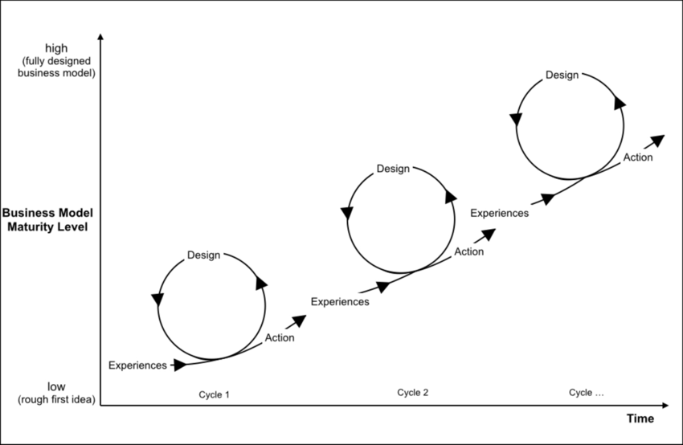
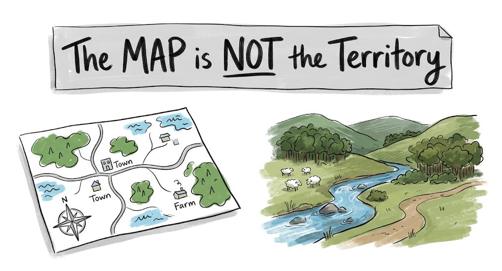
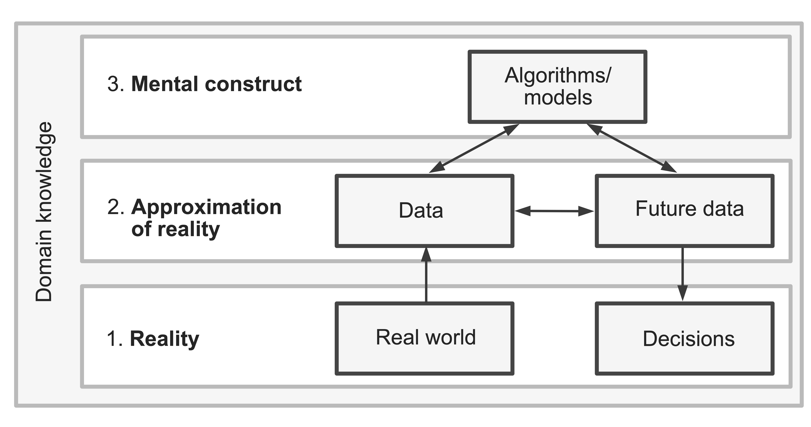

Introduction to Data Science
Motivating story: John Snow and the Broad Street Pump
Open the comic at: NotebookLM and follow the story.
John Snow’s Story: The invisible threat
- London, 1854 — cholera in Soho; hundreds died within days
- Consensus: miasma (bad air)
- Data suggested contaminated water is the cause not the air
Gathering the data
Germ theory wasn’t established yet. But Snow collected data:
- Where each household lived.
- Which drinking water they used.
He put deaths on a map to see if proximity to certain locations plays a role. Deaths were clustered around the Broad Street pump.

Investigating anomalies
Exceptions were:
- The brewery: No deaths. Workers drank from a private well.
- The workhouse: No deaths. They drank from their own dug well.
- The Hampstead widow: Died far from Soho; it turns out, she drank from the Broad Street water.
- Her niece, Died. He visited her.
Conclusion: in other words, proximity was showed correlation, but source of water was the actual cause.
Data to action
Snow showed the board his map and reasoning; they acted on the evidence.
“I had an interview with the Board of Guardians of St. James’s parish… In consequence of what I said, the handle of the pump was removed on the following day.” — John Snow
The well was later found near a leaking cesspit (حفرة صرف صحي).
Why this matters for data science
John Snow’s workflow is still the template:
- Question assumptions — demand evidence, not consensus alone.
- Collect structured, verifiable information.
- Visualize to see patterns lists hide.
- Explain outliers — they often test relationship is causal.
- Act — turn insight into a specific intervention.
Data science is using evidence to understand a situation and decide what to do — with modern tools for what Snow did on foot and on paper.
What is data science?
Data (plural): digitally recorded pieces of information about events. Together they support a full picture — stored and processed on computers.
- Numbers, text, images, sound, …
- Types: numerical, categorical (and subtypes).
- Different algorithms for different goals.
Data science is an interdisciplinary field that uses scientific methods, processes, algorithms, and systems to extract knowledge and insights from structured and unstructured data. It combines statistics, computer science, and domain knowledge to analyze data and support decisions and prediction.
Three pillars
- Domain knowledge — the right questions and interpreting results.
- Math & statistics — sound conclusions from incomplete information.
- Computer science — storage, algorithms, scale.

Data science life cycle

Standard path from raw data to useful insight or product, and how roles map to the pipeline.
The process
- Collection — databases, logs, files, sensors, …
- Cleaning — missing values, duplicates, formats, errors.
- EDA — summaries and plots; trends, correlations, anomalies.
- Model building — learn patterns / predict on new data.
- Deployment — ship models into apps, APIs, or pipelines that run on new data.
The roles
In large orgs these lines are sharp; in startups one person may wear several hats:
- Data engineers — infrastructure: ingestion, storage, pipelines (collection & cleaning).
- Data analysts — clean data, EDA, reports and dashboards (cleaning & EDA).
- ML engineers — reliable, efficient models in production (build & deploy).
- Data scientists — can span the whole cycle; often deepest in EDA and modeling, with enough engineering to get data and ship value.
See: SDAIA Professional Training in the Fields of Data and AI.
The Data Movie | Data Literacy Explained Visually
The Non-linear Nature of Data Science
- The view of data science as a multi-stage process can be attributed to Box (Box (1976)) and Cox and Snell (Cox and Snell (1981))
- In reality, DSLC is a non-linear problem-specific path of iterative refinement

The Map is not the Territory

The Map is not the Territory
As Data Scientists, our work spans the three realms:
- reality
- an approximation of reality (the data)
- and mental constructs (the analyses/algorithms)

The trustworthiness of our data-driven results depends heavily upon (1) the current data that we are conducting our analysis on and (2) the future data that we are applying our conclusions to being an effective approximation of reality, as well as our analyses and algorithms involving realistic assumptions and capturing relevant patterns.
Our World in Data
Want to look at the world through data? See many examples at: Our World in Data — research and data on global challenges.
Data Analysis
Data analysis is the process of inspecting, cleansing, transforming, and modeling data with the goal of discovering useful information, informing conclusions, and supporting decision-making.
Two approaches:
Confirmatory Data Analysis (CDA)
A top-down approach in which we start with a question and use data to answer it.Example: Hypothesis: “people are addicted to smart phones”. Let’s see if the data supports this.
Exploratory Data Analysis (EDA)
A bottom-up approach in which we start with the data and try to find something interesting.Example Data: “people who exercise at the gym”. Let’s find out what are their: ages, occupations, and common interests are.